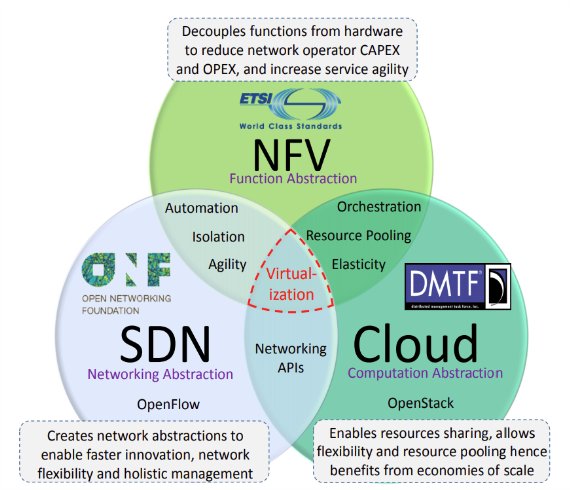

- Redes Definidas por Software (SDN): Embora sejam conceitos próximos o suficiente para gerar comparações, SDN e NFV são diferentes em sua abordagem de “desacoplar o {algo} de {outro algo}”. NFV foca em separar o hardware proprietário usado para funções de rede do próprio software que o executa, para garantir redução de custos e maior flexibilidade; enquanto SDN separa o controle da rede da seção de encaminhamento de dados, permitindo a criação de um controlador central programável que gerencia, organiza e define a maneira que cada nó numa rede (que agora seria o plano de dados da rede) encaminha pacotes um para o outro.
- Computação na Nuvem: Em geral, esse conceito se baseia num modelo que possibilita o acesso, pela rede, a uma quantidade arbitrária de recursos configuráveis (de rede, armazenamento, processamento, etc.) de forma flexível e altamente automatizada e otimizada, provendo e liberando a quantidade necessária de recursos com gerenciamento e/ou supervisionamento mínimo por parte dos provedores do serviço, podendo ser acessado a partir de qualquer tipo de dispositivo (celulares, PCs, servidores, etc.); dependendo apenas da demanda de seus usuários, que podem ser vários. Esse conceito se assemelha ao que NFV almeja alcançar, mas com as funções específicas de rede, e não apenas aplicações de TI. 
- Como Cloud Computing, SDN e NFV se relacionam: Como mostra a fig. X, e como os 3 conceitos se tratam de
virtualização com objetivos levemente diferentes, eles podem ser unidos para um suplantar as deficiências do outro: SDN, ao
criar um controlador geral, permite maior eficiência e agilidade na transferência de dados pela rede, enquanto NFV garante a
virtualização desse mesmo controlador, visto que ele pode funcionar numa máquina virtual junto com os nós da rede, os quais ele
vai encadear e gerenciar; já a nuvem pode servir como a própria infraestrutura na qual as VNFs seriam instanciadas, cumprindo
alguns objetivos que NFV espera alcançar, como compartilhamento de recursos, flexibilidade de serviço e escalabilidade, processos
já otimizados no próprio sistema de computação na nuvem.
Um problema seria a eficiência da nuvem, não para instanciação, gerenciamento e flexibilidade dos serviços oferecidos, mas sim na própria execução dos tais. Geralmente espera-se funcionamento praticamente perfeito de serviços de telecomunicação (baixíssima latência e altíssima estabilidade e confiabilidade são alguns requisitos), porém a nuvem não garante isso, tendo sido feita para atender serviços de TI, que são mais lenientes com seus requisitos. Portanto, mudanças devem ser feitas ao invés de simplesmente passar funções de operadoras para a nuvem.
8. Tecnologias Relacionadas